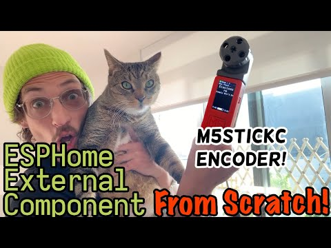
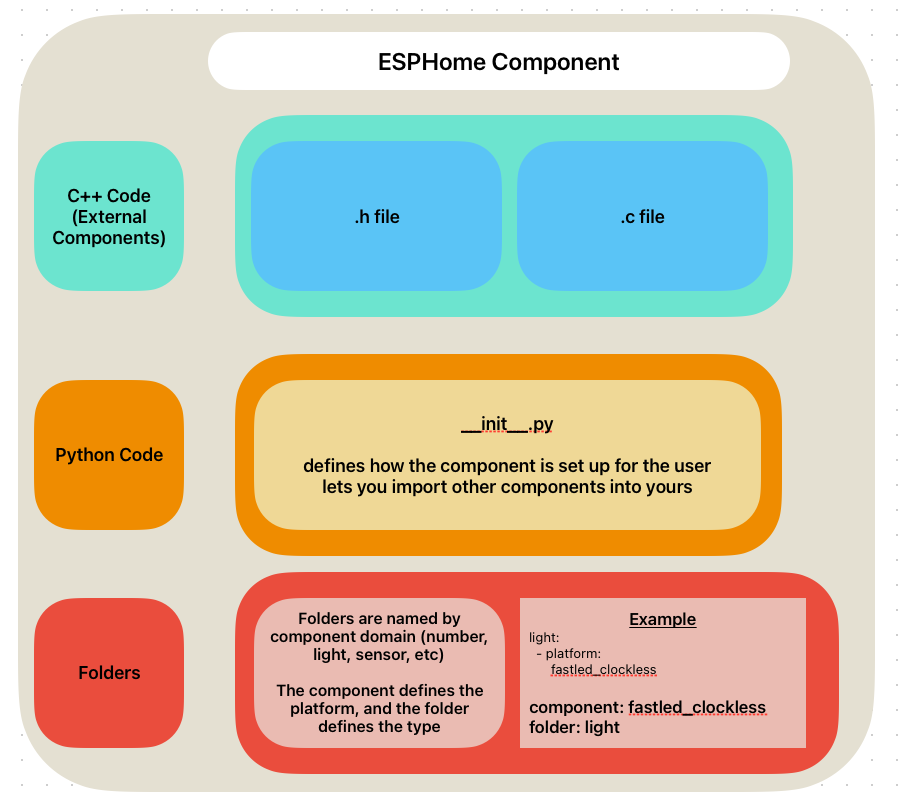
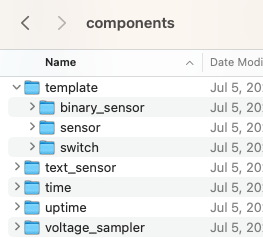
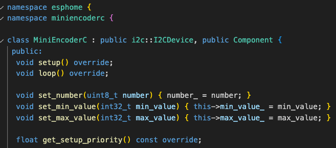
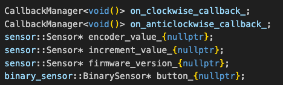
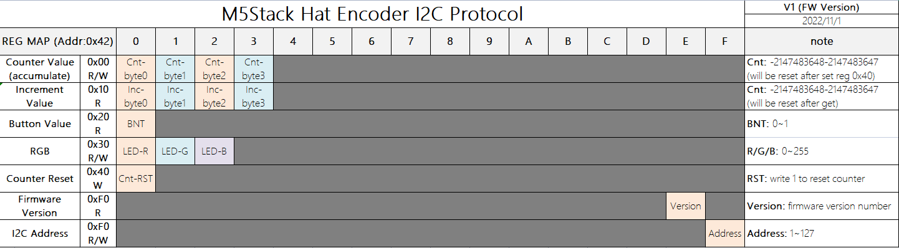

ESPHome Component From Scratch
Using the M5 Stack Mini EncoderC Hat

Priced at just eight dollars, this compact tool combines a scroll knob, a button and a light to provide intuitive control over various devices. In this blog post, we will delve into the technical aspects of the Mini Encoder C-Hat, examining its component structure, behavior, configuration process, and real-world implementation. Join us as we demystify the i2c Mini EncoderC Hat and discover its potential for seamless device control!
1. ESPHome Folder Structure:
ESPHome components consist of C++ files and Python files. C++ files contain the core code responsible for the component's functionality, while Python files enable users to define the component's setup. Furthermore, each component resides within its dedicated folder, allowing for organized and modular development.

folder structure example
components_folder
- fastled_clockless (name of component platform)
- light
- button
- etc, (other components)
- template (name of component)
- binary_sensor
- sensor
- switch
- etc, (other components)
folder example

example yaml
light:
- platform:
fastled_clockless
2. Analyzing the Header File:
https://github.com/landonr/esphome-components/blob/main/components/MiniEncoderC/miniencoderc.h
The header file of the Mini Encoder C-Hat provides essential insights into its operation. It serves as both an I²CDevice and a Component, facilitating device registration during the setup phase and granting access to setup(), loop(), and get_setup_priority() functions. The C++ file complements the header file, implementing the code that drives the Mini Encoder C-Hat's behavior and functionality.
Within the header and C++ files, we have an encoder_value and a button, serving as the primary means of interaction. The encoder_value is a Sensor which can publish a number, and the button is a BinarySensor which can publish on/off. These sensors facilitate seamless integration with other components by allowing subscription to published values. We also have callback triggers for when the encoder rotates clockwise and anticlockwise


3. Inside the C++ File:
https://github.com/landonr/esphome-components/blob/main/components/MiniEncoderC/miniencoderc.cpp

static const uint8_t MINI_ENCODER_C_FIRMWARE = 0xFE;
static const uint8_t MINI_ENCODER_C_RESET_COUNTER = 0x40;
static const uint8_t MINI_ENCODER_C_ENCODER = 0x00;
static const uint8_t MINI_ENCODER_C_INCREMENT = 0x10;
static const uint8_t MINI_ENCODER_C_BUTTON = 0x20;The constants in the C++ file are based on this image from the docs. We can see for example MINI_ENCODER_C_FIRMWARE is 0xFE, and in the table Firmware Version is row 0xF0, in column E. If the encoder isn't plugged in, the register won't read and the component will get marked as failed so it won't run. The firmware register is read like this:
uint8_t firmware;
if (this->read_register(MINI_ENCODER_C_FIRMWARE, &firmware, 1) !=
i2c::ERROR_OK) {
ESP_LOGE(TAG, "MiniEncoderC Setup Failed");
this->mark_failed();
return;
}If there is more than one byte to read, then we can look at multiple columns like this:
uint8_t data[4];
if (this->read_register(MINI_ENCODER_C_ENCODER, data, 4) != i2c::ERROR_OK) {
ESP_LOGE(TAG, "unable to read encoder level");
this->mark_failed();
return;
}
int32_t value = data[0] | (data[1] << 8) | (data[2] << 16) | (data[3] << 24);The register is read into an array with 4 spots, and then each 8 byte Integer deconstructed into a 32 bit Integer
4. Examining Configurations and Schemas:
https://github.com/landonr/esphome-components/blob/main/components/MiniEncoderC/__init__.py
Imports
In order to make our code work, we need to import certain components. These include the binary sensor for our button, the I²C module for device communication, and the sensor for reading encoder values. We also import some constants from ESPHome, such as the config ID and trigger ID for our light output. Additionally, we import automation for triggers and some light-related features.
import esphome.codegen as cg
import esphome.config_validation as cv
from esphome.components import binary_sensor, i2c, sensor
from esphome.const import (
CONF_ID,
CONF_TRIGGER_ID
)
from esphome.components.MiniEncoderC.light import MiniEncoderCLightOutput
from esphome import automation
from esphome.components.light import LightStateConfiguration and Constants
Since we can connect multiple devices, we automatically load the binary sensor and sensor modules when needed. We also make sure that the I²C class is defined correctly as a requirement. This ensures that the user has the necessary dependencies.
We set up our namespace and define our own config IDs and triggers that the user can use. These triggers are activated when the encoder is rotated clockwise or counterclockwise.
MULTI_CONF = True
AUTO_LOAD = [ "binary_sensor", "sensor" ]
DEPENDENCIES = ['i2c']
miniencoderc_ns = cg.esphome_ns.namespace('miniencoderc')
MiniEncoderC = miniencoderc_ns.class_('MiniEncoderC', i2c.I2CDevice, cg.Component)
CONF_ENCODER = "encoder"
CONF_ON_CLOCKWISE = "on_clockwise"
CONF_ON_ANTICLOCKWISE = "on_anticlockwise"
CONF_BUTTON = "button"
CONF_ENCODER_FILTER = "encoder_filter"
MiniEncoderCClockwiseTrigger = miniencoderc_ns.class_(
"MiniEncoderCClockwiseTrigger", automation.Trigger
)
MiniEncoderCAnticlockwiseTrigger = miniencoderc_ns.class_(
"MiniEncoderCAnticlockwiseTrigger", automation.Trigger
)
CONFIG_SCHEMA
The CONFIG_SCHEMA is what the user primarily interacts with. Here, they can set the ID for the encoder and optionally configure the button. We set the default I²C address to 0x42, which the user can change if needed.
Within the ENCODER_SCHEMA, there are additional options for the clockwise and counterclockwise triggers.
CONFIG_SCHEMA = cv.COMPONENT_SCHEMA.extend(
{
cv.GenerateID(): cv.declare_id(MiniEncoderC),
cv.Optional(CONF_ENCODER): ENCODER_SCHEMA,
cv.Optional(CONF_BUTTON): binary_sensor.binary_sensor_schema(),
}
).extend(i2c.i2c_device_schema(0x42))
ENCODER_SCHEMA = cv.Schema(
{
cv.Optional(CONF_ON_CLOCKWISE): automation.validate_automation(
{
cv.GenerateID(CONF_TRIGGER_ID): cv.declare_id(
MiniEncoderCClockwiseTrigger
),
}
),
cv.Optional(CONF_ON_ANTICLOCKWISE): automation.validate_automation(
{
cv.GenerateID(CONF_TRIGGER_ID): cv.declare_id(
MiniEncoderCAnticlockwiseTrigger
),
}
),
cv.Optional(CONF_ENCODER_FILTER, default=1): cv.int_range(min=1, max=100),
}
).extend(sensor.sensor_schema())
async def to_code(config):
During the build process, this code is transformed into C++. We create a variable called "var" and register it as a component so setup() is called and as an I²C device component so loop() is called. However, the values in our class are not yet assigned.
To fix this, we create a variable for the encoder and set its values. The "sens" variable represents an instance of the MiniEncoderC class. The set_encoder(sens) line is generated into C++ code and calls the corresponding function in out C++ file. Similarly, if a filter is provided, the set_encoder_function() function is called.
The clockwise and counterclockwise triggers, as well as the button, are also configured using specific C++ functions. When all the code is converted to C++ and executed, the device should work correctly if everything is set up properly by the user.
async def to_code(config):
var = cg.new_Pvariable(config[CONF_ID])
await cg.register_component(var, config)
await i2c.register_i2c_device(var, config)
if CONF_ENCODER in config:
sens = await sensor.new_sensor(config[CONF_ENCODER])
cg.add(var.set_encoder(sens))
encoderConfig = config[CONF_ENCODER]
if CONF_ENCODER_FILTER in encoderConfig:
cg.add(var.set_encoder_filter(encoderConfig[CONF_ENCODER_FILTER]))
for conf in encoderConfig.get(CONF_ON_CLOCKWISE, []):
trigger = cg.new_Pvariable(conf[CONF_TRIGGER_ID], var)
await automation.build_automation(trigger, [], conf)
for conf in encoderConfig.get(CONF_ON_ANTICLOCKWISE, []):
trigger = cg.new_Pvariable(conf[CONF_TRIGGER_ID], var)
await automation.build_automation(trigger, [], conf)
if CONF_BUTTON in config:
button = await binary_sensor.new_binary_sensor(config[CONF_BUTTON])
cg.add(var.set_button(button))5. Including Our New Component!
Loading the external component from GitHub
external_components:
- source:
type: git
url: https://github.com/landonr/esphome-components
ref: main
components: [MiniEncoderC]Loading the external component locally
(if you have it copied to esphome/local_components)
external_components:
- source:
type: local
path: local_components
components: [MiniEncoderC]Setting up the External Component
MiniEncoderC:
id: encoder
i2c_id: bus_b
# address: 0x42
button:
name: Rotary Button
id: rotary_button
encoder:
name: Rotary Encoder
id: rotary
encoder_filter: 2 // (1-100) divides the encoder value to make it less sensitive6. Conclusion:
By understanding I²C registers we can communicate with a ton of devices that can communicate with our projects. Now that we’re all experts at ESPHome’s component structure, behavior, configuration process, I hope to see some cool new components!
- lando